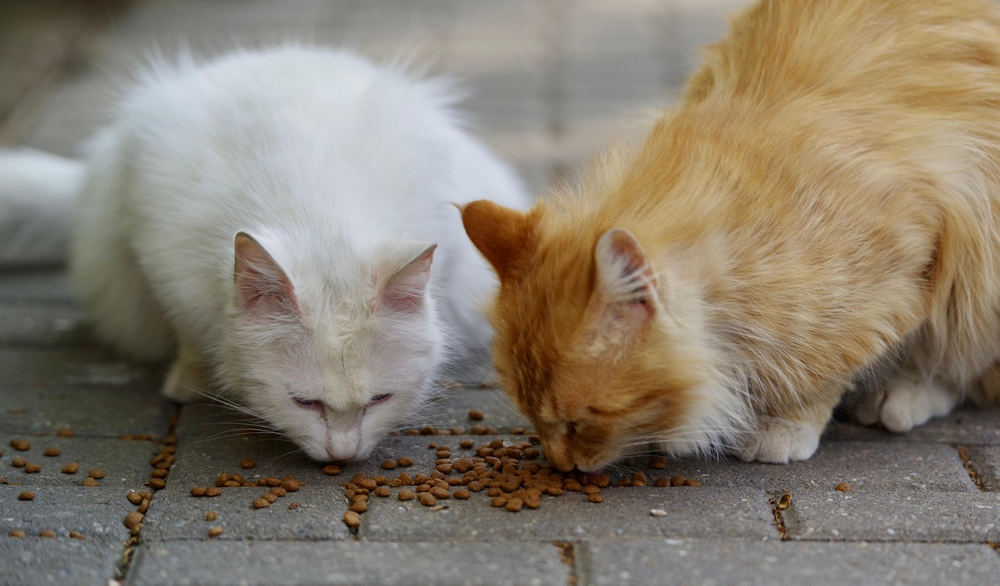

Sim, é possível usar um comedouro automático para dois gatos — mas colocar os dois para comer no mesmo pote, ou até em comedouros muito próximos, costuma ser a origem das brigas na hora da refeição, não a solução para elas. O problema raramente é o equipamento: é a forma como a alimentação é organizada entre os dois animais.
Resumo rápido
- Gatos são caçadores solitários por natureza e, de modo geral, não esperam dividir comida com outro felino, mesmo quando convivem bem (Hospital Veterinário Saúde, retrieved 2026-08-26).
- Brigas recorrentes na hora de comer podem levar um dos gatos a comer rápido demais, comer menos do que precisa, ou evitar a refeição (Petlove, retrieved 2026-08-26).
- A recomendação de especialistas em comportamento felino é a regra "número de gatos + 1": em uma casa com 2 gatos, o ideal são 3 pontos de comedouro/bebedouro disponíveis, não só 2 (Peritoanimal, retrieved 2026-08-26).
- Separar fisicamente os locais de alimentação reduz a disputa mais do que trocar de equipamento.
Este guia foca no comportamento e na configuração — para conhecer a categoria de produto como um todo, veja o guia completo de comedouro automático para pet.
Sim, mas com uma ressalva importante: usar um comedouro automático não elimina sozinho a disputa entre os gatos se os dois continuarem comendo no mesmo pote ou em pontos muito próximos. O comedouro resolve o problema de horário e porção programada — não resolve, por si só, a dinâmica social entre os animais.
Na prática, a forma mais confiável de evitar conflito é ter um comedouro (ou compartimento) por gato, com programação própria, e posicionar os pontos de alimentação longe o suficiente para que um gato não veja o outro comendo enquanto come.
Gatos são, por natureza, caçadores solitários e não costumam esperar dividir uma refeição com outro felino — mesmo quando os dois se dão bem no restante do dia (Hospital Veterinário Saúde, retrieved 2026-08-26). Isso significa que a disputa por comida pode aparecer mesmo entre gatos que convivem bem em outros momentos, como brincar ou dormir juntos.
Quando essas brigas se tornam recorrentes, o problema deixa de ser só de convivência: um dos gatos pode passar a comer rápido demais, comer menos do que precisa por evitar o confronto, ou até deixar de se alimentar direito perto do outro (Petlove, retrieved 2026-08-26).
Programar horários fixos e, se possível, ligeiramente diferentes entre os dois comedouros ajuda a reduzir a coincidência de ambos os gatos chegando ao ponto de alimentação ao mesmo tempo. Isso é mais simples de fazer com dois aparelhos independentes do que dividindo um único comedouro entre os dois.
Cada gato deve ter a porção ajustada individualmente conforme peso, idade e orientação veterinária — não existe uma porção "padrão" que sirva igualmente para os dois animais. Comedouros automáticos com programação por unidade facilitam manter essa diferença sem depender de pesar a ração manualmente todos os dias.
A recomendação prática de especialistas em comportamento felino é a chamada regra "número de gatos + 1": para uma casa com 2 gatos, o ideal são 3 pontos de comedouro (e o mesmo vale para bebedouro), posicionados em cômodos ou distâncias diferentes, longe o bastante para que um gato não consiga ver o outro comendo (Peritoanimal, retrieved 2026-08-26). Essa separação física costuma reduzir a disputa mais do que qualquer ajuste no próprio equipamento.
Depois de ajustar horários, porções e locais, vale observar por alguns dias se algum dos gatos ainda está evitando o comedouro, comendo rápido demais, ou "vigiando" o outro à distância. Esses sinais indicam que a separação física ainda não é suficiente e pode ser necessário afastar ainda mais os pontos de alimentação, ou consultar um médico-veterinário especializado em comportamento se o conflito persistir.
Sempre que possível, dois comedouros — um para cada gato — tendem a resolver melhor o problema do que um único aparelho maior dividido entre os dois. Um comedouro só, mesmo automático e com porções programadas, ainda coloca os dois gatos no mesmo ponto físico na hora de comer, o que mantém o gatilho da disputa territorial.
A exceção é quando o orçamento ou o espaço realmente não permitem dois aparelhos — nesse caso, programar horários bem espaçados entre os dois gatos (um come e sai antes do outro ser liberado) reduz parte do conflito, mas normalmente não com a mesma eficácia de ter os dois pontos de alimentação separados desde o início.
Existem comedouros automáticos com tecnologia de reconhecimento por coleira ou microchip, que só abrem a tampa quando identificam o gato cadastrado para aquele compartimento. Essa tecnologia é útil principalmente quando não é possível manter os dois gatos fisicamente separados durante a refeição — por exemplo, em espaços pequenos onde não há como afastar bem os pontos de alimentação.
Vale considerar essa tecnologia como um recurso adicional para casos difíceis, não como substituto da separação física sempre que ela for viável. Também é importante verificar, antes de comprar, se o modelo específico realmente atende ao caso (peso mínimo/máximo de coleira, compatibilidade com o tipo de chip, etc.) diretamente na ficha técnica do fabricante, já que essas especificações variam entre marcas e modelos.
O erro mais comum é colocar os dois potes lado a lado "para facilitar", o que na prática mantém os gatos no mesmo campo de visão durante a refeição e não resolve a disputa territorial. Outro erro frequente é ajustar porções iguais para os dois gatos sem considerar diferenças reais de peso, idade ou nível de atividade.
Também é comum subestimar o tempo de adaptação: mesmo depois de separar os pontos de alimentação corretamente, pode levar alguns dias para que o comportamento de disputa diminua. Trocar de estratégia cedo demais, antes de dar tempo para o ajuste funcionar, é um erro que atrapalha a avaliação real do que está funcionando ou não.
Para entender a diferença entre alimentar gato e cachorro na mesma casa (outro cenário comum de conflito por comida), veja também a diferença entre comedouro automático para gato e para cachorro.
Um comedouro automático pode, sim, ajudar bastante na rotina de dois gatos — mas o fator decisivo para evitar brigas na hora da comida é a separação física dos pontos de alimentação e a programação individual de porções e horários, não apenas a automação em si. Comece testando a regra "número de gatos + 1" e ajuste a partir da observação do comportamento dos seus gatos nos primeiros dias.
Tecnicamente sim, mas não é a opção mais recomendada. Dividir o mesmo pote costuma favorecer o gato mais dominante e deixar o outro comendo menos ou mais rápido do que deveria. O ideal é ter um comedouro (ou compartimento) por gato, seguindo a regra de recursos separados usada por especialistas em comportamento felino.
A forma mais confiável é usar um comedouro automático para cada gato, com horários e porções programados individualmente no aparelho ou no aplicativo, conforme peso, idade e orientação veterinária de cada animal. Comedouros com reconhecimento de coleira/chip ajudam quando não é possível separar fisicamente os dois no momento da refeição.
Sim, isso é comum quando os comedouros ficam próximos ou quando um gato é mais assertivo que o outro. Separar fisicamente os pontos de alimentação, em cômodos ou distâncias diferentes, reduz bastante esse risco — mesmo com dois aparelhos automáticos.
Escrito pela Equipe Smart Pet Gadgets. Veja nossa política editorial e como verificamos as fontes citadas neste artigo.
🐾 Confira o preço e a disponibilidade atual no Mercado Livre.
Ver no Mercado Livre →Link de afiliado: podemos receber uma comissão por compras feitas através deste link, sem custo adicional para você.
Nildo Alves — curadoria de produtos pet no Smart Pet Gadgets. Testa e pesquisa produtos para cães e gatos, cruzando especificações de fabricante com boas práticas veterinárias e dados de mercado.
Sobre o Smart Pet Gadgets · Contato · Política editorial e de afiliados